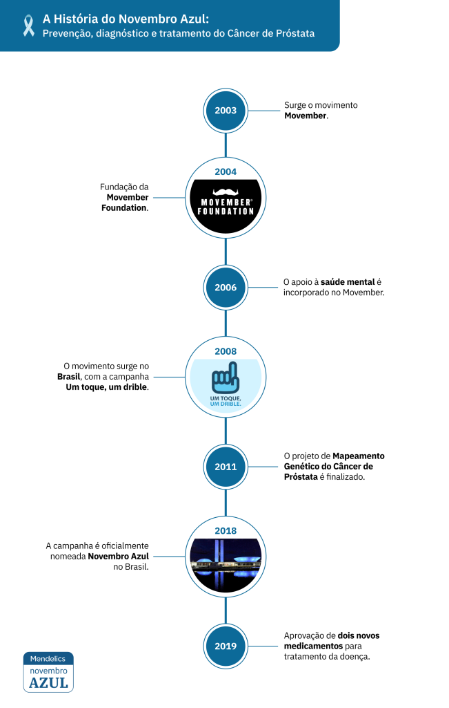

Novembro Azul: Conscientização sobre a Saúde Masculina
A campanha Novembro Azul visa conscientizar sobre a saúde masculina e convida homens a se cuidarem mais, dando ênfase na prevenção e diagnóstico de câncer de próstata e testículos.
O câncer de próstata é o segundo mais comum entre brasileiros, somando mais de 65 mil novos casos por ano, segundo o INCA (Instituto Nacional do Câncer).
Confira toda a campanha do Novembro Azul Mendelics: Abrace Sua Genética
História do Novembro Azul
Em 2003, Travis Garone e Luke Slattery, dois amigos australianos, se encontraram em um bar em Melbourne. Dentre tantos assuntos, começaram a discutir porque o bigode, tão comum em décadas anteriores, deixou de ser considerado um item “da moda”, e se eles conseguiriam trazer essa tendência de volta. Inspirados por uma conhecida que angariava fundos para campanhas do Outubro Rosa, que visa conscientizar sobre o câncer de mama, decidiram lançar o desafio para seus amigos: crescer um bigode durante o mês de novembro, como uma forma de chamar atenção para os cuidados com a saúde masculina e conscientizar sobre o câncer de próstata. Foi aí que surgiu o movimento Movember: uma junção das palavras Mustache (bigode em inglês) e November (novembro em inglês). Naquele ano foram 30 participantes, ou Mo Bros, como são chamados pela campanha. Em 2004 o movimento já tomou proporções muito maiores com a fundação da Movember Foundation, que almejava criar campanhas de conscientização sobre câncer de próstata e arrecadar fundos para a Fundação Australiana de Câncer de Próstata (Prostate Cancer Foundation of Australia – PCFA). Essa primeira campanha reuniu 450 Mo Bros e arrecadou mais de 50 mil dólares australianos (equivalente a mais de 200 mil reais), rendendo a maior doação que a PCFA já havia recebido. A partir dali o movimento só cresceu, ganhando novos parceiros e sendo adotado por vários outros países nos anos seguintes, incluindo a Inglaterra e a Espanha, os primeiros países a receber a versão internacional do Movember.

Em 2006, a Beyond Blue, organização focada no cuidado da saúde mentalna Austrália,
se juntou ao movimento, que passou a dar mais enfoque às consequências do câncer de próstata na saúde mental dos pacientes.
Com a ajuda de doações da Movember Foundation, o Projeto de Mapeamento Genético do Câncer de Próstata foi finalizado em 2011. O
projeto encontrou informações importantes sobre as causas genéticas do câncer de próstata, auxiliando políticas de prevenção, diagnóstico e tratamento da doença. Em 2016,
a Movember se uniu à Fundação Nacional de Câncer de Mama da Austrália, para tratar da saúde de homens e mulheres e estudar as similaridades entre os cânceres de
mama, ovário e próstata.
Cerca de 10% dos casos de câncer são hereditários.
Mutações que aumentam o risco de câncer de mama e ovário em mulheres também elevam o risco de câncer de próstata em homens.
Outras pesquisas financiadas pela fundação encontraram, em 2018, as causas genéticas de câncer testicular familiar. Essas descobertas levaram ao desenvolvimento de testes genéticos de triagem capazes de estimar o risco de desenvolver esse tipo de câncer em indivíduos com histórico familiar da doença. Em 2019, dois novos medicamentos para tratar câncer de próstata foram aprovados pela FDA (organização de controle de fármacos nos Estados Unidos), após pesquisas também financiadas pela campanha. Hoje o movimento já conta com mais de 6 mil Mo Bros, em mais de 20 países, além de ter apoiado mais de 1.200 projetos voltados para a saúde masculina e prevenção de câncer de próstata e testículo.
Novembro Azul no Brasil
O movimento chegou ao Brasil em 2008, iniciado pelo Instituto Lado a Lado pela Vida com a campanha Um toque, um drible, que visava quebrar estigmas e incentivar homens a realizarem os exames preventivos. Em 2018, o Instituto nomeou a campanha de Novembro Azul, inspirada pelas campanhas do Outubro Rosa. A campanha foi adotada nacionalmente, com a participação de diversas ONGs, além do INCA, Sociedade Brasileira de Urologia e outras organizações de saúde.
No Brasil, o câncer de próstata é o segundo mais comum na população, ficando atrás somente do câncer de pele não melanoma.
Segundo o INCA, são diagnosticados mais de 65 mil novos casos de câncer de próstata em brasileiros, e registradas mais de 15 mil mortes, todos os anos. O diagnóstico tardio da doença é o principal fator que dificulta o tratamento. Casos de câncer de próstata diagnosticados precocemente têm uma chance de cura de até 90%. Por isso, todos os anos são realizados diversos eventos e campanhas para incentivar a conversa sobre o cuidado com a saúde masculina. Participe da campanha! Deixe o bigode crescer e alavanque essa conversa!
Novembro Azul na Mendelics
Assim como outros tipos de cânceres, a forma hereditária do câncer de próstata soma cerca de 10% dos casos diagnosticados. Testes genéticos de predição de risco de câncer hereditário podem identificar as alterações genéticas que aumentam a chance de desenvolver a doença. A Mendelics lançou, durante o Outubro Rosa, a campanha #AbraceSuaGenética, para conscientizar o nosso público sobre o câncer hereditário de mama e ovário. No mês de novembro continuamos com a campanha, agora focada em conteúdos informativos sobre o câncer de próstata. Veja os artigos sobre câncer de mama e o Outubro Rosa. Siga a Mendelics nas redes sociais e assine a nossa newsletter para acompanhar toda a campanha, onde vamos abordar as causas do câncer de próstata, quais os fatores de risco, prevenção e como diagnosticar a doença. Se tiver histórico de câncer na família, procure um médico! Se houver necessidade de fazer um teste genético, a Mendelics oferece diversos exames, incluindo o Painel de Câncer de Próstata Hereditário, que analisa 40 genes associados ao desenvolvimento da doença. Conscientize-se. Abrace sua Genética!